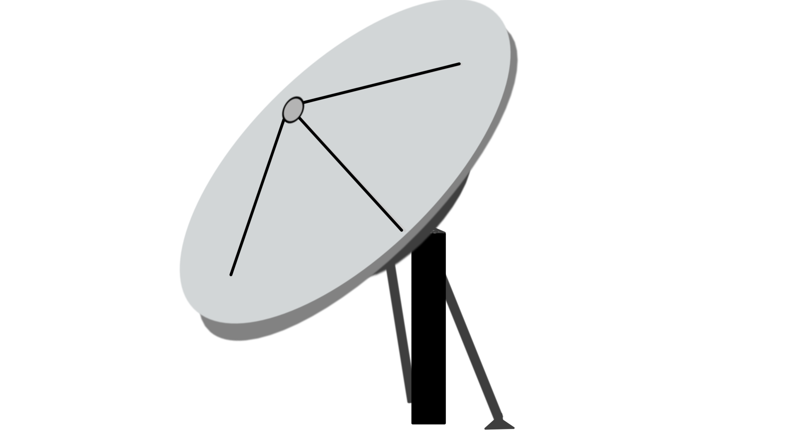

Get Connected. Wherever you are.
InterDish provides high-speed satellite internet that could connect anywhere in the world 1

Get High-Speed Connections Anywhere
With its state-of-the-art satellite technology that has been honed for more than a decade, IntelliDish can provide high-speed internet access that is equal with fiber-optic connections anywhere2, as long as you can supply power to the dish.
Interdish for Businesses and Power Users
Reliable high-speed internet designed to keep businesses connected.
What our clients think about us
h
g
w
s
d
d